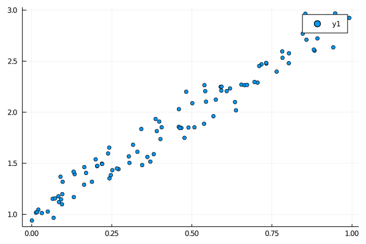
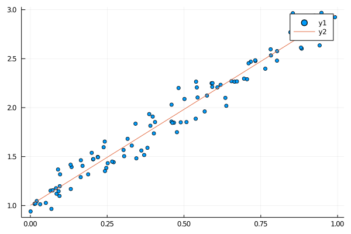
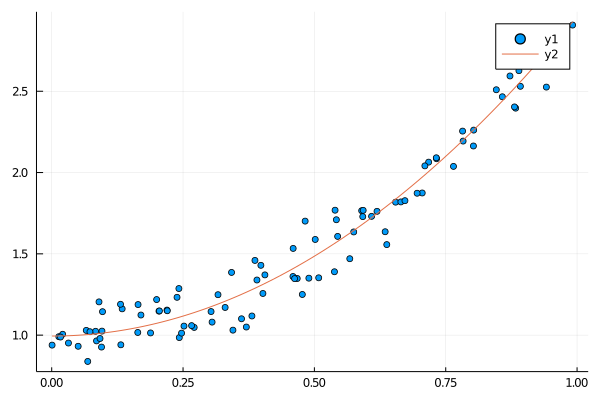

学校の授業で勉強はしたが、自分で考えてまとめたことはなかったのでここに記しておく。
問題設定(1)
$\bm{y} = (y^{(1)}, y^{(2)}, \ldots, y^{(N)})^T,\ \bm{x}_i = (1, x_1^{(i)}, x_2^{(i)}, \ldots, x_D^{(i)})^T$
とおく。$(\bm{x}_i, y_i),\ i = 1, 2, \ldots, N$ がデータとして与えられている。このとき、入力と出力の間に
$$
\begin{aligned}
y
&= h_{\bm{w}}(\bm{x})\\
&:= w_0 + w_1x_1 + w_2x_2 + \cdots + w_Dx_D\\
&= \bm{w}^T\bm{x}
\end{aligned}
$$
が成り立つと仮定し、これに適する$\bm{w}$を見つけたい。「適する」とは具体的に何なのかというと、ここでは予測とデータとの二乗誤差の和
$$
J(\bm{w}) = \frac{1}{2} \sum_{i=1}^{N} (h_{\bm{w}}(\bm{x}_i) - y^{(i)})^2
$$
が最小となる $\bm{w}$ を求める。この $J$ については呼び名がいくつかあるが、ここではコスト関数と呼ぶ。
係数 $1/2$ は微分した時に出てくる $2$ を消し去るための便宜的なものであり、つける必然はない。
コスト関数の最小値を求める(1)
コスト関数の行列表現
まず $J$ を行列だけで表現してみる。
$$
\begin{aligned}
J(\bm{w})
&= \frac{1}{2} \sum_{i=1}^{N} (\bm{w}^T\bm{x}_i - y^{(i)})^2\\
&= \frac{1}{2} \sum_{i=1}^{N} (\bm{x}_i^T\bm{w} - y^{(i)})^2\\
&= \frac{1}{2}
\begin{pmatrix}
\bm{x}_1^T\bm{w} - y^{(1)}\\
\bm{x}_2^T\bm{w} - y^{(2)}\\
\vdots\\
\bm{x}_N^T\bm{w} - y^{(N)}\\
\end{pmatrix}^T
\begin{pmatrix}
\bm{x}_1^T\bm{w} - y^{(1)}\\
\bm{x}_2^T\bm{w} - y^{(2)}\\
\vdots\\
\bm{x}_N^T\bm{w} - y^{(N)}\\
\end{pmatrix}\\
&= \frac{1}{2}
\left(
\begin{pmatrix}
\bm{x}_1^T\bm{w}\\
\bm{x}_2^T\bm{w}\\
\vdots\\
\bm{x}_N^T\bm{w}\\
\end{pmatrix} - \bm{y}
\right)^T
\left(
\begin{pmatrix}
\bm{x}_1^T\bm{w}\\
\bm{x}_2^T\bm{w}\\
\vdots\\
\bm{x}_N^T\bm{w}\\
\end{pmatrix} - \bm{y}
\right)
\end{aligned}
$$
ここで、
$$
X = \begin{pmatrix}
\bm{x}_1^T \\ \bm{x}_2^T \\ \vdots \\ \bm{x}_N^T
\end{pmatrix}
$$
とおくと、
$$
\begin{aligned}
J(\bm{w})
&= \frac{1}{2}
\left(
\begin{pmatrix}
\bm{x}_1^T\bm{w}\\
\bm{x}_2^T\bm{w}\\
\vdots\\
\bm{x}_N^T\bm{w}\\
\end{pmatrix} - \bm{y}
\right)^T
\left(
\begin{pmatrix}
\bm{x}_1^T\bm{w}\\
\bm{x}_2^T\bm{w}\\
\vdots\\
\bm{x}_N^T\bm{w}\\
\end{pmatrix} - \bm{y}
\right)\\
&= \frac{1}{2}
\left( X\bm{w} - \bm{y} \right)^T
\left( X\bm{w} - \bm{y} \right)
\end{aligned}
$$
コスト関数の勾配
$J$ の勾配を求めるために、式を展開する。
$$
\begin{aligned}
J(\bm{w})
&= \frac{1}{2}
\left( \bm{w}^TX^T - \bm{y}^T \right)
\left( X\bm{w} - \bm{y} \right)\\
&= \frac{1}{2}
\left(
\bm{w}^TX^TX\bm{w} - \bm{w}^TX^T\bm{y} -\bm{y}^TX\bm{w} + \bm{y}^T\bm{y}
\right)
\end{aligned}
$$
$J$ の全ての項はスカラーだから、$\bm{w}^TX^T\bm{y} = \bm{y}^TX\bm{w}$が成り立つ。よって、
$$
\begin{aligned}
J(\bm{w})
&= \frac{1}{2}
\left(
\bm{w}^TX^TX\bm{w} - 2\bm{y}^TX\bm{w} + \bm{y}^T\bm{y}
\right)
\end{aligned}
$$
二次形式の微分とベクトルの微分
$$
\begin{aligned}
\frac{\partial}{\partial \bm{x}} \bm{x}^TA\bm{x} &= (A + A^T) \bm{x} \\
\frac{\partial}{\partial \bm{x}} \bm{a}^T\bm{x} &= \bm{a}
\end{aligned}
$$
に注意すると、
$$
\begin{aligned}
\frac{\partial J(\bm{w})}{\partial \bm{w}}
&= \frac{1}{2}
\left(
(X^TX + (X^TX)^T) \bm{w} - 2X^T\bm{y}
\right)\\
&= \frac{1}{2}
\left(
2X^TX \bm{w} - 2X^T\bm{y}
\right)\\
&= X^TX \bm{w} - X^T\bm{y}
\end{aligned}
$$
これで勾配が導出できた。係数 $1/2$ がうまく消えてくれたことに注目。
早速"勾配 = 0"を解いてみる。その解を $\bm{w}_0$とすると、$X^TX$が正則であると仮定して、
$$
\begin{aligned}
& \quad \frac{\partial J(\bm{w}_0)}{\partial \bm{w}} = \bm{0} \\
\Leftrightarrow & \quad X^TX \bm{w}_0 = X^T\bm{y} \\
\Leftrightarrow & \quad \bm{w}_0 = \left( X^TX \right)^{-1} X^T \bm{y}
\end{aligned}
$$
極小値であること
さて、これは本当に極小値なのだろうか。
それを確かめるべく、ヘッセ行列を計算してみる。
もし $\bm{w}$ に対応するヘッセ行列が正定値行列なら、それは極小値である。
一般に、
$\displaystyle \frac{\partial f}{\partial \bm{x}} = \bm{a}$
なら $\displaystyle \frac{\partial f}{\partial \bm{x}^T} = \bm{a}^T$ だから、
$$
\begin{aligned}
\frac{\partial J(\bm{w})}{\partial \bm{w}^T}
&= \bm{w}^TXX^T - \bm{y}^TX^T
\end{aligned}
$$
よって、ヘッセ行列は、
$$
\begin{aligned}
\frac{\partial J(\bm{w})}{\partial \bm{w}^T\bm{w}}
&= X^TX
\end{aligned}
$$
これはどうやら $\bm{w}$ によらない行列になるようだ。
一般に $\bm{x}^T\bm{x} \ge 0$ となることに注意すると、
任意の $\bm{z} \neq \bm{0}$ について、
$$
\begin{aligned}
\bm{z}^T(X^TX)\bm{z} = (X\bm{z})^T(X\bm{z}) \ge 0
\end{aligned}
$$
であるから、$X^TX$ は半正定値行列である。
このことから、$J$ が凸関数であることがいえる。
しかしこの時点ではまだ極小かどうかは分からない。
$X\bm{z} = \bm{0}$ となる $\bm{z} \neq \bm{0}$ が存在しなければ、$X^TX$ は正定値行列である。
$X \in \mathbb{R}^{N \times (D + 1)}$ が正方行列でない可能性があることに注意すると、
$\bm{z}$ についての同次方程式 $X\bm{z} = \bm{0}$
が自明な解しか持たないための必要十分条件は $\mathrm{rank}\ X = D + 1$、すなわち列フルランクであることである。
一般に $\mathrm{rank}\ X^TX = \mathrm{rank}\ X$ が成り立つ(この事実は今回初めて知った…)。
よって、$\mathrm{rank}\ X = D + 1$ であることと $X^TX$
が正則であることは同値である。$X^TX$ の正則性は仮定していたから、結局 $X^TX$ が正定値であることが分かった。
すなわち、$J(\bm{w}_0)$ は極小値である。
最小値であること
$J$ のヘッセ行列が $\bm{w}$ によらず $X^TX$、すなわち正定値行列であることに注意すると、$J(\bm{w}_0)$
極小値であるだけでなく、最小値であることも示せる。見やすさのため、
ここでは勾配を $\nabla J(\bm{w})$ 、ヘッセ行列を $\nabla^2 J(\bm{w})$ と書く。
$\bm{w}$ を $\nabla J(\bm{w}) = \bm{0}$ となる点とする。
そこから$\Delta \bm{w}$ だけずれた $J(\bm{w} + \Delta\bm{w})$ を考える。
テイラーの定理より、ある $\bm{d}$ が存在して、
$$
J(\bm{w}_0 + \Delta\bm{w})
= J(\bm{w}_0) +
\nabla J(\bm{w}_0)^T \Delta\bm{w} +
\frac{1}{2} \Delta \bm{w}^T \nabla^2 J(\bm{d}) \Delta \bm{w}
$$
となる。 仮定より $\nabla J(\bm{w}) = \bm{0}$、正定値性より $\Delta \bm{w}^T \nabla^2 J(\bm{d}) \Delta \bm{w} \gt 0$ だから、結局、
$$
J(\bm{w} + \Delta\bm{w}) \gt J(\bm{w})
$$
となる。よって、$\bm{w}$ から $\Delta \bm{w}$ だけずれたとしても、$J$ の値は $J(\bm{w})$ 以下にならない。
よって、$J$ は $\bm{w}$ で大域的な最小値となる。
Juliaによる実装
さて、$X^TX$ が正則であれば、$J$ の最小値は
$$
\begin{aligned}
\bm{w}_0 = \left( X^TX \right)^{-1} X^T \bm{y}
\end{aligned}
$$
で与えられることが分かった。
これを計算するプログラムを書くのは、線型代数のライブラリを持つ言語なら非常に簡単である。
ここではJuliaでプログラムを書いてみる。
ちなみに、Pythonではnumpy.linalgを使えば逆行列とかの計算ができる。
実装を気にすることなく線形回帰をしたい場合は
scikit-learnのLinearRegression
を使えば良い。scikit-learnのJulia版にScikitLearn.jlがある(内部でscikit-learnを呼び出している模様)ので、
Juliaでも同じことができる。
関連モジュールをインポートし、型のエイリアスを作っておく。
using Plots
using LinearAlgebra
using Random, Distributions
Vec = Vector{Float64}
Mat = Matrix{Float64}
サンプルデータの作成
ここではデータセットは使わず、データは自前で作る。
ある $\bm{w}$ で作ったデータを元に $\bm{w}_0$ を計算して、これが $\bm{w}$ と近い値なのかどうかを確認する。
まず、適当なデータを作成する関数を作る。 $\bm{w}$ が与えられたとすると、作るデータ $(\bm{x}, y)$ は
$$
y = \bm{w}^T\bm{x} + \varepsilon
$$
に従うものとする。ただし、 $\varepsilon$ は平均 $0$、分散 $\sigma^2$ の正規分布とする。
$\bm{x} = (1, x_1, x_2, \ldots, x_D)$ の最初の成分以外は一様分布乱数で作成し、さらに正規分布乱数で $\varepsilon$ を計算すれば $\bm{y}$
を計算できる。
$\bm{w}$ を元に $N$ 点のデータを作成する関数は以下のようになる。
少ないデータで結果を出したい都合上、正規分布の標準偏差を小さく設定している。
function generate_data(w :: Vec, N :: Int64)
D = length(w)
@assert D > 1
d = Normal(0, 0.1)
X = hcat(ones(N), rand(N, D - 1))
y = X * w + rand(d, N)
X, y
end
作成したデータを試しにプロットしてみたいので、以下のようにmain関数を作成。
function main()
Random.seed!(2021)
X, y = generate_data([1.0, 2.0], 100)
p1 = scatter(X[:, 2], y)
display(p1)
end
# main関数を実行
main()
ためしにJuliaのREPLで確かめてみる。コードのファイル名はregression.jlとした。
% julia
julia> include("regression.jl")
generate_dataの引数を[1.0, 2.0]にしたので、$y = 1 + 2x$ の点がプロットできている。

wの計算
次の計算式をそのままJuliaに書き下せば良い。
$$
\begin{aligned}
\bm{w} = \left( X^TX \right)^{-1} X^T \bm{y}
\end{aligned}
$$
Juliaでは行列の転置を'、逆行列をinvで計算できる。
w = inv(X' * X) * (X' * y)
…と言いたいところだが、逆行列を計算して左から掛けるよりも、
以下の $\bm{w}$ についての方程式を解く方が、
数値計算の効率が良い。
$$
\begin{aligned}
X^TX\bm{w} = X^T \bm{y}
\end{aligned}
$$
Juliaではこれを\演算子で行える。
試しに $\bm{w} = (-1, 2, 4, 1)$ でデータを生成して、そのうえで w を計算してみる。
function main()
Random.seed!(2021)
X, y = generate_data([-1.0, 2.0, 4.0, 1.0], 100)
p1 = scatter(X[:, 2], y)
w = (X' * X) \ (X' * y)
display(w)
end
[-1, 2, 4, 1]に近い値になっていることが分かる。
julia> include("regression.jl")
4-element Vector{Float64}:
-1.06337895821069
1.9893951252434998
4.025930296546132
1.0825520926923566
グラフでプロットして確認してみる。$\bm{w} = (1, 2)$ の場合でwを計算し、
それを係数とした直線を引いてみる。
function main()
Random.seed!(2021)
X, y = generate_data([1.0, 2.0], 100)
p1 = scatter(X[:, 2], y)
# wの計算
w = (X' * X) \ (X' * y)
# y = w[1] + w[2]*x の描画
plot_x = range(minimum(X[:, 2]), maximum(X[:, 2]), length=100)
plot!(p1, plot_x, x -> w[1] + w[2]*x)
display(p1)
end
julia> include("regression.jl")
データ点に近い直線を引けていることが確認できる。

問題設定(2) - 基底関数を含む場合
$\bm{y} = (y^{(1)}, y^{(2)}, \ldots, y^{(N)})^T,\ \bm{x}_i = (1, x_1^{(i)}, x_2^{(i)}, \ldots, x_D^{(i)})^T, \bm{\phi}(\bm{x}) = (1, \phi_1(\bm{x}), \phi_2(\bm{x}), \ldots, \phi_D(\bm{x}))$
とおく。$(\bm{x}_i, y_i),\ i = 1, 2, \ldots, N$ がデータとして与えられている。このとき、入力と出力の間に
$$
\begin{aligned}
y
&= h_{\bm{w}}(\bm{x})\\
&:= w_0 + w_1\phi_1(\bm{x}) + w_2\phi_2(\bm{x}) + \cdots + w_D\phi_D(\bm{x})\\
&= \bm{w}^T\bm{\phi}(\bm{x})
\end{aligned}
$$
が成り立つと仮定し、そのコスト関数
$$
\begin{aligned}
J(\bm{w}) = \frac{1}{2} \sum_{i=1}^{N} (h_{\bm{w}}(\bm{x}_i) - y^{(i)})^2
\end{aligned}
$$
が最小になるように $\bm{w}$ を決定したい。
コスト関数の最小値を求める (2)
流れは「コスト関数最小値を求める(1)」とまったく同じ。
$$
\begin{aligned}
\Phi =
\begin{pmatrix}
\bm{\phi}(\bm{x}_1)^T\\
\bm{\phi}(\bm{x}_2)^T\\
\vdots\\
\bm{\phi}(\bm{x}_N)^T
\end{pmatrix}
\end{aligned}
$$
として、
$$
\begin{aligned}
J(\bm{w})
&= \frac{1}{2}
\left( \Phi\bm{w} - \bm{y} \right)^T
\left( \Phi\bm{w} - \bm{y} \right)\\
&= \frac{1}{2}
\left(\bm{w}^T\Phi^T\Phi\bm{w} - 2\bm{y}\Phi\bm{w} + \bm{y}^T\bm{y}\right)
\end{aligned}
$$
が得られる。続いて勾配を求めると、
$$
\begin{aligned}
\frac{\partial J(\bm{w})}{\partial \bm{w}}
&= \Phi^T\Phi\bm{w} - \Phi^T\bm{y}
\end{aligned}
$$
となる。$\Phi^T\Phi$ が正則なら、以下の $\bm{w}$ が存在し、それは $J$ の最小値となる。
$$
\begin{aligned}
& \quad \frac{\partial J(\bm{w})}{\partial \bm{w}} = \bm{0}\\
\Leftrightarrow & \quad \bm{w} = \left(\Phi^T\Phi\right)^{-1} \Phi^T\bm{y}
\end{aligned}
$$
Juliaによる実装 (2)
サンプルデータの作成 (2)
$\Phi$ を計算するために、ベクトル値関数 $\bm{\phi}(\bm{x})$ を引数に持たせる。
$\bm{w}$ の計算にもはや $X$ は必要ないのだが、グラフにデータをプロットする際に必要になるので、
$X$ も返り値に含めている。
function generate_data(w :: Vec, N :: Int64; phi=x -> x)
D = length(w)
@assert D > 1
d = Normal(0, 0.1)
X = hcat(ones(N), rand(N, D - 1))
Phi = similar(X)
for i in 1:N
Phi[i,1] = 1.0
Phi[i,2:end] = phi(X[i,2:end])
end
y = Phi * w + rand(d, N)
X, Phi, y
end
試しに関数 $y = 1 + 2x^2$ によるデータをプロットしてみる。
function main()
Random.seed!(2021)
X, Phi, y = generate_data([1.0, 2.0], 100, phi=x->[x[1]^2])
p1 = scatter(X[:, 2], y)
display(p1)
end
wの計算 (2)
これに対応するwを求める。
function main()
Random.seed!(2021)
X, Phi, y = generate_data([1.0, 2.0], 100, phi=x->[x[1]^2])
p1 = scatter(X[:, 2], y)
w = (Phi' * Phi) \ (Phi' * y)
display(w)
plot_x = range(minimum(X[:, 2]), maximum(X[:, 2]), length=100)
plot!(p1, plot_x, x -> w[1] + w[2]*x^2)
display(p1)
end
[1, 2]に近い値をとっている。
julia> include("regression.jl")
2-element Vector{Float64}:
0.9943755135747157
1.965007135423543
データ点に近い2次関数を描いている。

計算量
以下の $\bm{w}$ を計算するときの時間計算量を考える。
$$
\begin{aligned}
X^TX\bm{w} = X^T \bm{y}
\end{aligned}
$$
Juliaではこれを\演算子で行える。
$X^T\bm{y}$ の計算量は、$D \times N$ 行列と $N \times 1$ 行列の積の計算だから $O(DN)$。
$X^TX$ の計算量は、$D \times N$ 行列と $N \times D$ 行列の積の計算だから $O(ND^2)$。
\ のドキュメントによると、
三角行列の場合は交代代入 or 前進代入、そうでない場合はLU分解で三角行列に変換してから解くようだ。$X^TX$ は一般に三角行列ではないのでLU分解され、計算量は $O(D^3)$ となる。
まとめると、計算量は $O(ND^2 + D^3)$ となる。